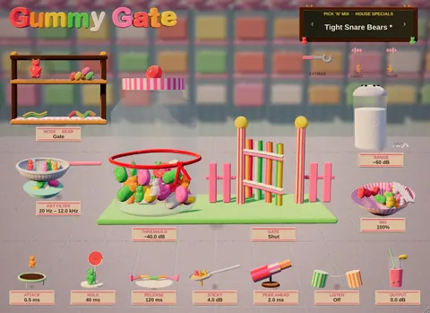
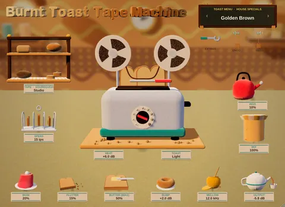
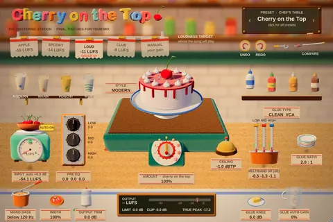

Plugins for Pro Tools
Our paid plugins come as AAX for Pro Tools on Mac, signed so Pro Tools loads them without complaint. The same installer adds AU and VST3 for your other DAWs.
Black Friday: all 16 plugins for $29 with the Full Fridge (was $50), until 1 December. See the deals
Run the installer and restart Pro Tools. The plugins appear in the insert menu under their category. AAX is Mac only for now; on Windows our plugins are VST3.
Butter Spread, our stereo widener, is AU and VST3 only.
Step-by-step help, including the Windows first-run box: Installing safely.
What to reach for
- Spice Shelf EQ (equalizer). An EQ you play by taste, with a live curve.
- Popcorn Sandwich Compressor (compressor). A one-dial compressor and expander.
- Gummy Gate (gate). A gate for drums and vocals.
- Ghost Pepper Clipper (clipper). A clean clipper.
- Bread Oven Reverb (reverb). A warm reverb with ducking.
- Spaghetti Delay (delay). Tape, analog and lo-fi delay.
- Burnt Toast Tape Machine (tape saturation). Tape saturation.
- Cherry on the Top Mastering (mastering). One-dial mastering.
 Spice Shelf EQEQ plugin
Spice Shelf EQEQ plugin Popcorn Sandwich CompressorCompressor plugin
Popcorn Sandwich CompressorCompressor plugin
Gummy GateGate plugin Ghost Pepper ClipperClipper plugin
Ghost Pepper ClipperClipper plugin Bread Oven ReverbReverb plugin
Bread Oven ReverbReverb plugin Spaghetti DelayDelay plugin
Spaghetti DelayDelay plugin
Burnt Toast Tape MachineTape saturation plugin
Cherry on the Top MasteringMastering plugin
Get all 16 in the Full FridgeTry them free first
Recipes to try
Questions
Do your plugins work in Pro Tools?
Yes, on Mac. The 15 paid plugins include AAX versions that are signed for Pro Tools.
Is there AAX for Windows?
Not yet. On Windows the plugins are VST3.
Can I try them before buying?
Yes. Every plugin has a 3-day free trial, and Butter Spread, our stereo widener, comes with a free licence.
More menus
Lo-fiVocalsDrumsMasteringBeginnersCreative effectsHip hop and trapFL StudioLogic ProAbleton Live